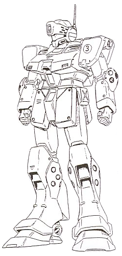

| RGM-79SP GM Sniper II Limited Production High Efficiency Earth Federation Mobile Suit |
|
|  | |
 RPG quick stats sheet
RPG quick stats sheet
Armor Rating: 6.1, 6.6 with shield
Speed Rating: Space-6.4 Ground-4.5 Air-4.4 Water-2.4 Moon-4 Jupiter-.1
Maneuverability Rating: Space-6.9 Ground-5 Air-3.9 Water-2.7 Moon-4.1 Jupiter-.1
General and Technical Data |
|
|
Model number: RGM-79SP Code name: GM Sniper II Unit type: special purpose limited production mobile suit Operator: Earth Federation Dimensions: head height 18.0 meters Weight: empty 45.0 metric tons; max gross 61.0 metric tons Construction: titanium/ceramic composite on semi-monocoque frame Powerplant: Minovsky type ultracompact fusion reactor, output rated at 1390 kW Propulsion: rocket thrusters: 2 x 21000 kg, 4 x 15000 kg Performance: maximum thruster acceleration 1.67 G; maximum ground running speed 120 km/h Equipment and design features: sensors with additional targeting sensors in visor, range 8700 meters Fixed armaments:2 x beam saber, powered by rechargable energy cap, stored in recharge racks on rear waist armor, hand-carried in use Optional hand armaments: 90mm machine gun, 20 rounds per magazine, spare magazines stored in shield; beam rifle, powered by rechargable energy cap; sniper rifle, 5 round clip; shield Magnetic Storage Racks: 3, primary rack below backpack, 2 secondary racks inside shield |
|
| Technical and Historical Notes | |
While the Earth Federation's deployment of the original series of RGM-79 GMs and related variants proved a major upset to the Zeon Duchy's dominance of mobile suit warfare, Zeon was not far behind in producing a bevy of new and frightening mobile weapons to close the gap. Chiefly in response to the highly successful MS-09 Dom series and under considerable concern for future Zeon designs, the Federation embarked on additional rounds of mobile suit development based on the basic GM design. The top-tier product of these proceedings was the GM Sniper II, a high performance unit with an added capability for long-range engagements against enemy mobile suits. The GM Sniper II was developed concurrently with the RGM-79G GM Command, and shares many core components. The Sniper II is fitted with a totally redesigned backpack and four powerful thrusters in its legs, making it the most mobile Federation mobile suit of the war. Lightweight composite armor materials allowed the Sniper II to be relatively well armored while still maintaining a low overall mass, though it was still just as vulnerable to direct hits from heavy Zeon bazookas. It shared the GM Command's 90mm machine gun and beam rifle, shield, and skirt-mounted beam sabers. In spite of its "sniper" designation, the Sniper II is very nimble and can be expertly exploited in close-quarters combat. Though a perfectly capable general purpose mobile suit, the Sniper II is also provided for long-distance combat with a powerful sensor suite and a highly sensitive flip-down visor, significantly increasing the mobile suit's effective engagement range with normal weapons. The GM Command's 60mm vulcan guns were deleted in order to make space for the visor and over concerns of vibration damage to the sensitive sensor apparatuses. To allow the Sniper II to take the fullest advantage of its extended combat radius, a powerful semiautomatic sniper rifle was provided, allowing skilled pilots to disarm or disable enemy mobile suits by targeting weapons or other vulnerable points. |
| Weapons and Features | |
|
|
|